22 Shares and sets
These charts draw the parts of a whole as nested rectangles (treemap), bands or rings (partition), nested circles (pack) or a grid of cells (waffle); venn draws overlapping sets. Use them to compare shares, or to count the items that sets have in common.
(ns reference.charts-shares-sets
(:require [cljplot2.chart :as chart]
[cljplot2.core :as plot]
[cljplot2.describe :as describe]
[notebook-utils :as nu]))The table below holds made-up costs of the teams of three departments; the treemaps, icicles and circle packings use it:
(def budget [{:dept "science" :team "physics" :cost 40} {:dept "science" :team "biology" :cost 25}
{:dept "science" :team "chemistry" :cost 18} {:dept "arts" :team "music" :cost 15}
{:dept "arts" :team "theatre" :cost 10} {:dept "arts" :team "painting" :cost 7}
{:dept "sport" :team "football" :cost 20} {:dept "sport" :team "tennis" :cost 8}])| dept | team | cost |
|---|---|---|
| science | physics | 40 |
| science | biology | 25 |
| science | chemistry | 18 |
| arts | music | 15 |
| arts | theatre | 10 |
| arts | painting | 7 |
| sport | football | 20 |
| sport | tennis | 8 |
The table below holds made-up shares of an energy mix; the waffles use it:
(def energy-mix [{:source "coal" :share 35} {:source "gas" :share 23} {:source "nuclear" :share 10}
{:source "hydro" :share 15} {:source "wind and solar" :share 17}])| source | share |
|---|---|
| coal | 35 |
| gas | 23 |
| nuclear | 10 |
| hydro | 15 |
| wind and solar | 17 |
The table below holds the members of three clubs, a row per membership; the Venn diagrams use it:
(def memberships (concat (for [i (range 12)] {:club "chess" :member (str "p" i)})
(for [i (range 8 14)] {:club "running" :member (str "p" i)})
(for [i (range 0 24 3)] {:club "choir" :member (str "p" i)})))| club | member |
|---|---|
| chess | p0 |
| chess | p1 |
| chess | p2 |
| chess | p3 |
| chess | p4 |
| chess | p5 |
| chess | p6 |
| chess | p7 |
| chess | p8 |
| chess | p9 |
| chess | p10 |
| chess | p11 |
| running | p8 |
| running | p9 |
| running | p10 |
| running | p11 |
| running | p12 |
| running | p13 |
| choir | p0 |
| choir | p3 |
| choir | p6 |
| choir | p9 |
| choir | p12 |
| choir | p15 |
| choir | p18 |
| choir | p21 |
22.1 Treemaps
chart/treemap draws each leaf of a hierarchy as a rectangle, its area by its value, nested inside the rectangle of its group. Use it to compare the shares of many parts and their groups at once.
:mapping:valuerequired – The size of each row's node, a positive finite number; the chart drops other rows.:hierarchyrequired – The levels of the tree, outer level first; a row's path ends at its firstnilor"".:color– Colours each leaf; rows with the same path but different colours stay separate leaves.
(plot/render-image {:data budget
:mapping {:hierarchy [:dept :team] :value :cost}
:charts [(chart/treemap)]}
{:width 600 :height 380})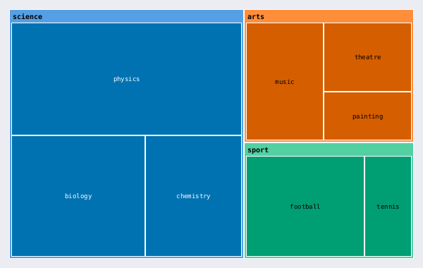
These options set the room inside a group, the cell outlines, the layout and the order of siblings. The panels below draw a wider gap with black outlines, then slices:
(plot/render-image (plot/arrange [{:data budget
:mapping {:hierarchy [:dept :team] :value :cost}
:charts [(chart/treemap {:gap 8 :stroke-color :black :stroke-width 2})]
:labels {:title ":gap 8, black borders"}}
{:data budget
:mapping {:hierarchy [:dept :team] :value :cost}
:charts [(chart/treemap {:layout :slice-dice})]
:labels {:title ":layout :slice-dice"}}]
{:columns 2})
{:width 1000 :height 380})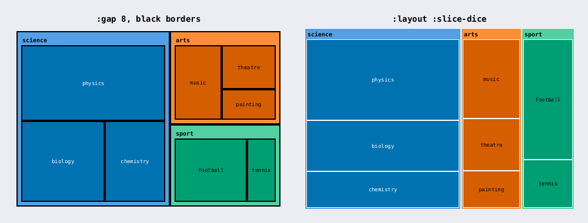
The next panels swap the default orders: slices ordered by value read largest first, and squarified cells keep the data order:
(plot/render-image (plot/arrange [{:data budget
:mapping {:hierarchy [:dept :team] :value :cost}
:charts [(chart/treemap {:layout :slice-dice :order :value})]
:labels {:title ":slice-dice, :order :value"}}
{:data budget
:mapping {:hierarchy [:dept :team] :value :cost}
:charts [(chart/treemap {:order :data})]
:labels {:title ":squarify, :order :data"}}]
{:columns 2})
{:width 1000 :height 380})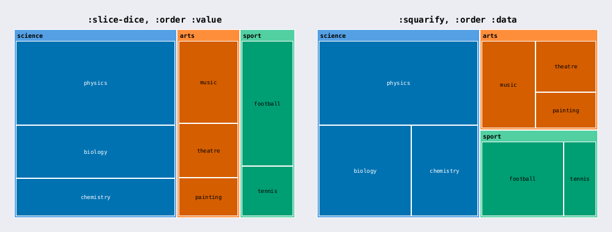
22.2 Icicles and sunbursts
chart/partition draws a hierarchy as an icicle: adjacent bands, one per level, each node as wide as its value. In polar coordinates the bands become the rings of a sunburst. Use it to show the shares at every level of a tree.
:mapping:valuerequired – The size of each row's node, a positive finite number; the chart drops other rows.:hierarchyrequired – The levels of the tree, outer level first; a row's path ends at its firstnilor"".:color– Colours each leaf; rows with the same path but different colours stay separate leaves.
(plot/render-image (plot/arrange [{:data budget
:mapping {:hierarchy [:dept :team] :value :cost}
:charts [(chart/partition)]
:labels {:title "cartesian: icicle"}}
{:data budget
:mapping {:hierarchy [:dept :team] :value :cost}
:charts [(chart/partition)]
:coord {:kind :polar}
:labels {:title "polar: sunburst"}}]
{:columns 2})
{:width 1000 :height 420})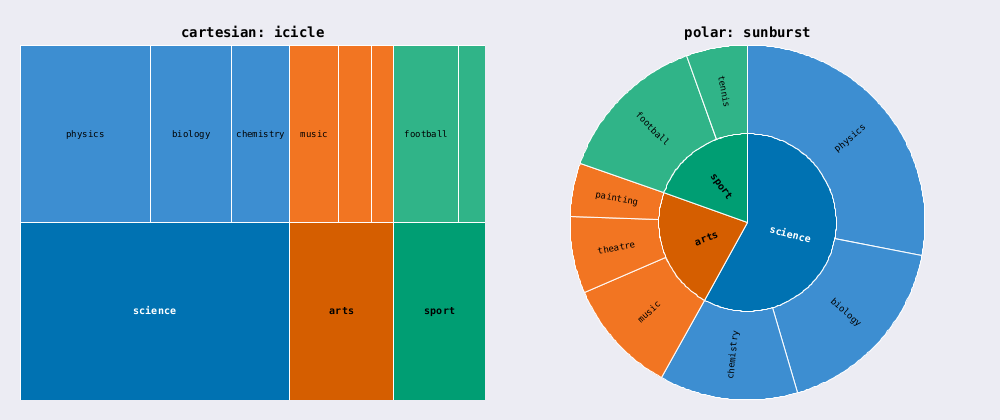
These options set the cell outlines, the order of siblings, how the chart colours the nodes and whether it draws the root. The left panel below draws the root at the centre and keeps the order of the reversed budget rows, so sport comes first and the teams go from the cheapest up; the right one colours each node by its name:
(plot/render-image (plot/arrange [{:data (reverse budget)
:mapping {:hierarchy [:dept :team] :value :cost}
:charts [(chart/partition {:order :data :root true})]
:coord {:kind :polar}
:labels {:title ":order :data, :root true"}}
{:data budget
:mapping {:hierarchy [:dept :team] :value :cost}
:charts [(chart/partition {:color-by :name :stroke-width 2})]
:coord {:kind :polar}
:labels {:title ":color-by :name"}
:legend false}]
{:columns 2})
{:width 1000 :height 460})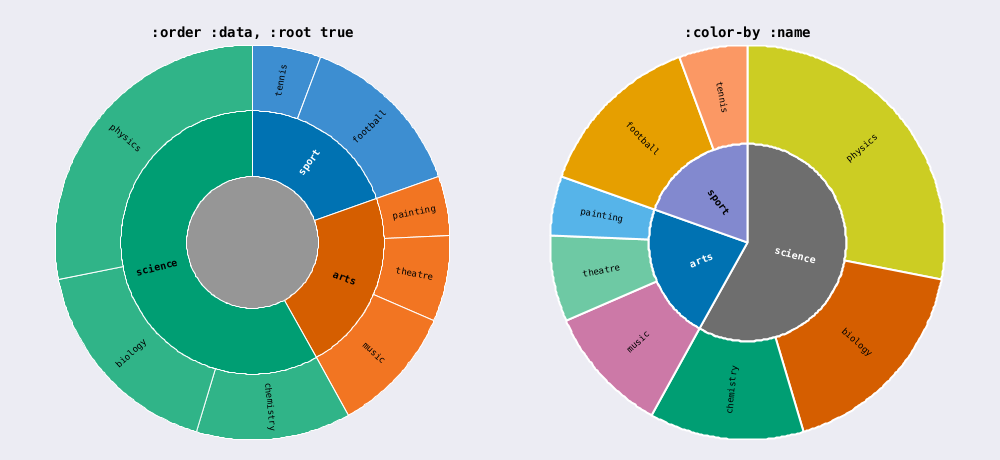
The icicle below draws thick dark outlines instead of the default thin white ones:
(plot/render-image {:data budget
:mapping {:hierarchy [:dept :team] :value :cost}
:charts [(chart/partition {:stroke-color [40 40 40] :stroke-width 3})]
:labels {:title ":stroke-color, :stroke-width 3"}}
{:width 600 :height 360})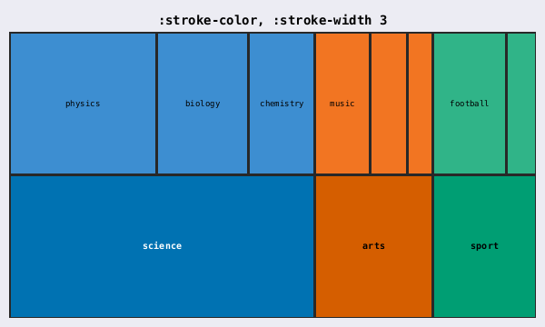
22.3 Circle packing
chart/pack draws each leaf of a hierarchy as a circle, its area by its value, packed inside the circle of its group. Use it for the shares of a tree when the groups matter more than exact areas.
:mapping:valuerequired – The size of each row's node, a positive finite number; the chart drops other rows.:hierarchyrequired – The levels of the tree, outer level first; a row's path ends at its firstnilor"".:color– Colours each leaf; rows with the same path but different colours stay separate leaves.
(plot/render-image {:data budget
:mapping {:hierarchy [:dept :team] :value :cost}
:charts [(chart/pack)]}
{:width 500 :height 450})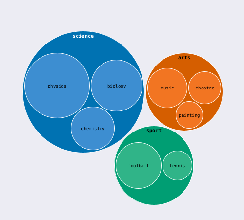
These options set the room between circles, the outlines, the packing order, the root circle and the depths the chart leaves out. The panels below draw a wider gap with the root, then leave out the group circles (depth 1):
(plot/render-image (plot/arrange [{:data budget
:mapping {:hierarchy [:dept :team] :value :cost}
:charts [(chart/pack {:gap 10 :root true :stroke-color :black})]
:labels {:title ":gap 10, :root true"}}
{:data budget
:mapping {:hierarchy [:dept :team] :value :cost}
:charts [(chart/pack {:hidden-levels #{1}})]
:labels {:title ":hidden-levels #{1}"}}]
{:columns 2})
{:width 1000 :height 480})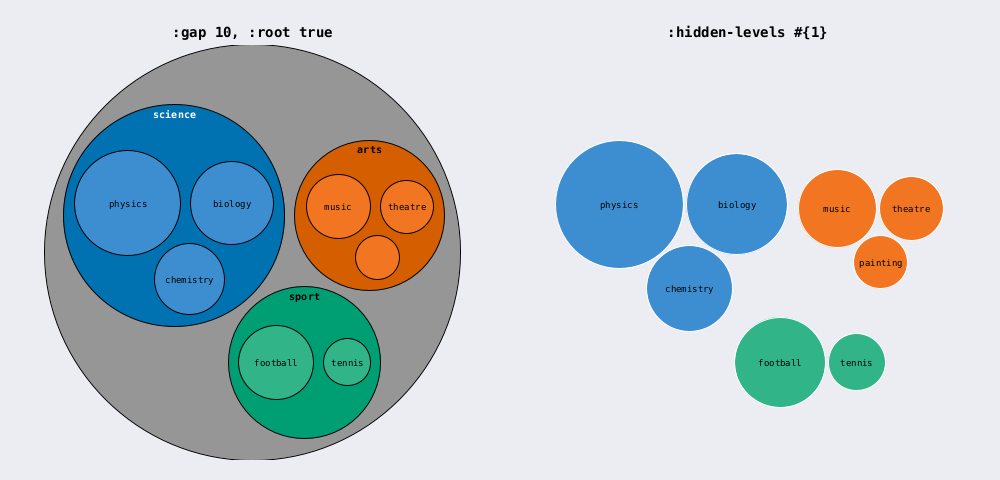
The next panels pack the reversed budget rows (smallest first) by value, then in data order; the third panel draws thick dark outlines:
(plot/render-image (plot/arrange [{:data (reverse budget)
:mapping {:hierarchy [:dept :team] :value :cost}
:charts [(chart/pack {:order :value})]
:labels {:title ":order :value (default)"}}
{:data (reverse budget)
:mapping {:hierarchy [:dept :team] :value :cost}
:charts [(chart/pack {:order :data})]
:labels {:title ":order :data"}}
{:data budget
:mapping {:hierarchy [:dept :team] :value :cost}
:charts [(chart/pack {:stroke-color [40 40 40] :stroke-width 3})]
:labels {:title ":stroke-width 3"}}]
{:columns 3})
{:width 1000 :height 360})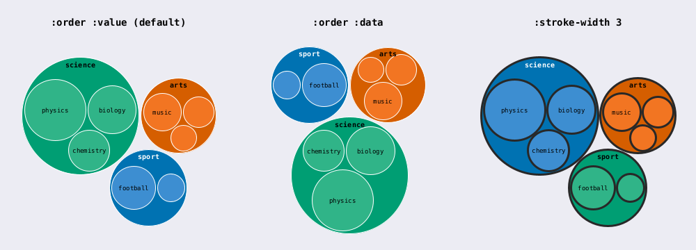
22.4 Waffle charts
chart/waffle draws a grid of cells, 10 by 10 by default, each category taking its share of the cells. Use it to show a few shares as countable units.
:mapping:colorrequired – Splits the rows into categories, each with its own colour and its share of the cells.:value– The weight of each row, a non-negative finite number; the chart drops other rows.:pattern– Splits the rows into groups, each with its own fill pattern; a category with two patterns takes two shares of the cells.
(plot/render-image {:data energy-mix
:mapping {:color :source :value :share}
:charts [(chart/waffle)]}
{:width 500 :height 380})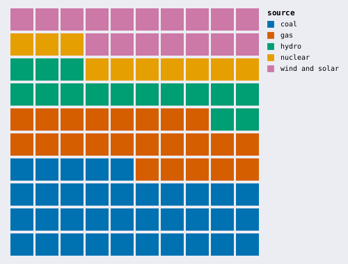
These options set the cells’ shape, gap and outline and the grid’s size and fill order; :unit instead makes each cell stand for a fixed value, so the cell count follows the values. The panels below draw circles on a 5 by 20 grid, fill by columns with white outlines and no gap, then draw one cell per 2 units, 5 columns wide:
(plot/render-image (plot/arrange [{:data energy-mix
:mapping {:color :source :value :share}
:charts [(chart/waffle {:cell-shape :circle :gap 0.2 :rows 5 :columns 20})]
:labels {:title ":circle, 5 × 20"}
:legend false}
{:data energy-mix
:mapping {:color :source :value :share}
:charts [(chart/waffle {:fill-order :columns :stroke-color :white :stroke-width 2
:gap 0})]
:labels {:title ":fill-order :columns"}
:legend false}
{:data energy-mix
:mapping {:color :source :value :share}
:charts [(chart/waffle {:unit 2 :columns 5})]
:labels {:title ":unit 2"}}]
{:columns 3 :widths [1.3 1 1.1]})
{:width 1000 :height 380})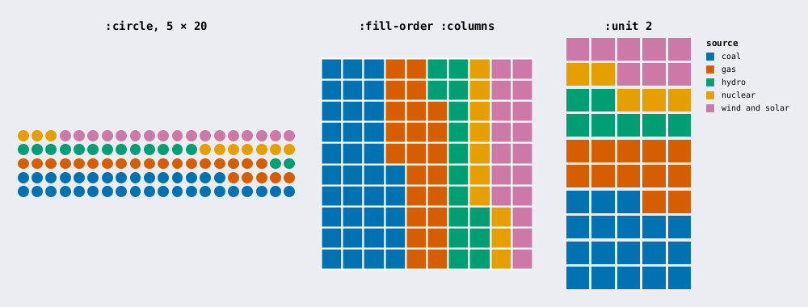
22.5 Venn diagrams
chart/venn draws two or three sets as overlapping circles and labels each region with the number of items it holds; each row names an item and a set it belongs to. Use it to show how a few sets overlap.
:mapping:setrequired – The set a row's item belongs to.:itemrequired – The item; repeated rows count once.
(plot/render-image {:data memberships
:mapping {:set :club :item :member}
:charts [(chart/venn)]}
{:width 500 :height 420})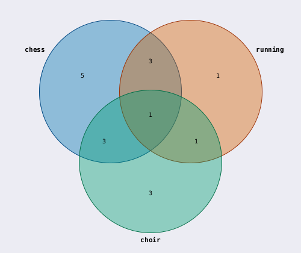
These options set the fill and outline, which sets the chart shows, proportional areas of two sets, and the set and region labels. The panels below draw two proportional sets, two equal circles, then shares as region labels:
(plot/render-image (plot/arrange [{:data memberships
:mapping {:set :club :item :member}
:charts [(chart/venn {:sets ["chess" "running"]})]
:labels {:title "two sets, proportional"}}
{:data memberships
:mapping {:set :club :item :member}
:charts [(chart/venn {:sets ["chess" "running"] :proportional false :alpha 0.6
:stroke-color :none})]
:labels {:title ":proportional false"}}
{:data memberships
:mapping {:set :club :item :member}
:charts [(chart/venn {:region-labels #(format "%.0f%%" (* 100.0 (double (:share %))))})]
:labels {:title ":region-labels - shares"}}]
{:columns 3})
{:width 1000 :height 380})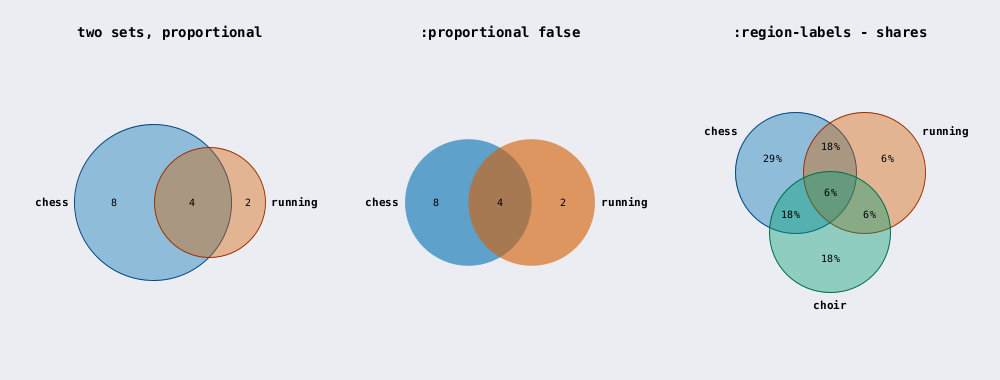
The next panels leave out the set names, then draw thick outlines in the darkened set colours:
(plot/render-image (plot/arrange [{:data memberships
:mapping {:set :club :item :member}
:charts [(chart/venn {:set-labels false})]
:labels {:title ":set-labels false"}}
{:data memberships
:mapping {:set :club :item :member}
:charts [(chart/venn {:stroke-width 4})]
:labels {:title ":stroke-width 4"}}]
{:columns 2})
{:width 900 :height 380})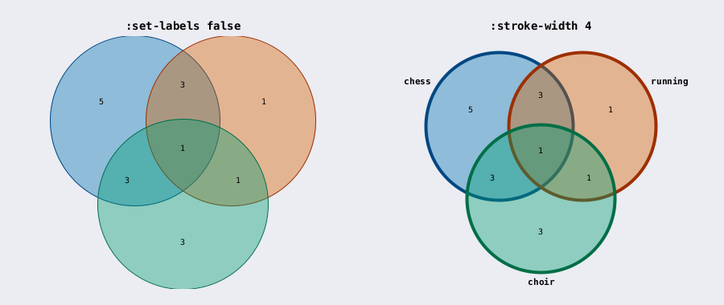
A theme key sets the room between a circle and its set name. The diagram below widens it:
[:theme :chart :venn], not options:label-gap(default4) – pixels between a circle and its set name (theme only, not an option)
(plot/render-image {:data memberships
:mapping {:set :club :item :member}
:charts [(chart/venn)]
:theme {:chart {:venn {:label-gap 16}}}}
{:width 500 :height 420})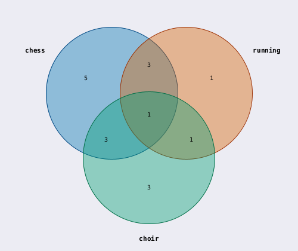
source: notebooks/reference/charts_shares_sets.clj